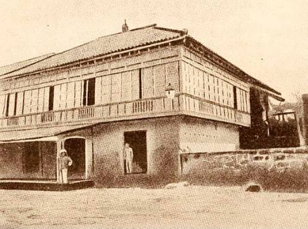
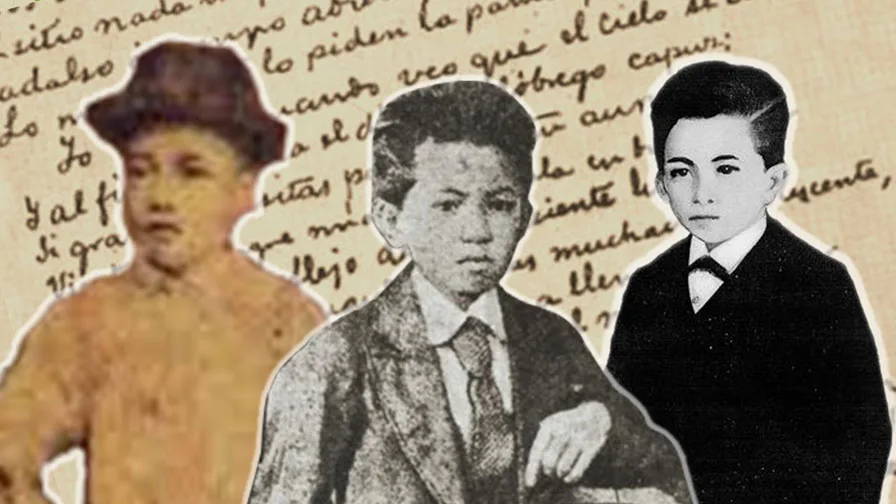
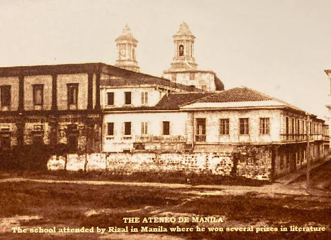
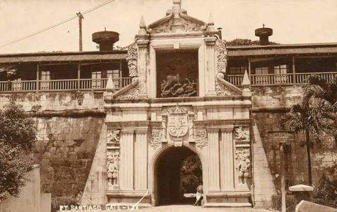

Family & Childhood
Rizal grew up in Calamba in a family that valued education, discipline, faith, and learning. His childhood environment and family relationships became important foundations of his character.
EARLY LIFE
Before becoming known for his novels, essays, poems, and nationalism, Rizal was a young Filipino shaped by family, education, faith, hardship, and curiosity.

AT A GLANCE

Rizal grew up in Calamba in a family that valued education, discipline, faith, and learning. His childhood environment and family relationships became important foundations of his character.

His education in Biñan and later at the Ateneo Municipal de Manila helped develop his academic ability, literary talent, and interest in the world around him.

Rizal's final imprisonment at Fort Santiago preceded his execution on December 30, 1896. This period is closely associated with his final farewell to his country.
TIMELINE
Rizal was born in Calamba, Laguna.
The execution of Fathers Gomez, Burgos, and Zamora deeply affected Rizal and Filipino society.
Rizal developed academically and artistically as a student.
Rizal traveled to Spain and continued his studies and reformist work.
During exile, Rizal practiced medicine, taught, farmed, conducted scientific activities, and wrote.
Rizal was imprisoned at Fort Santiago and executed on December 30.